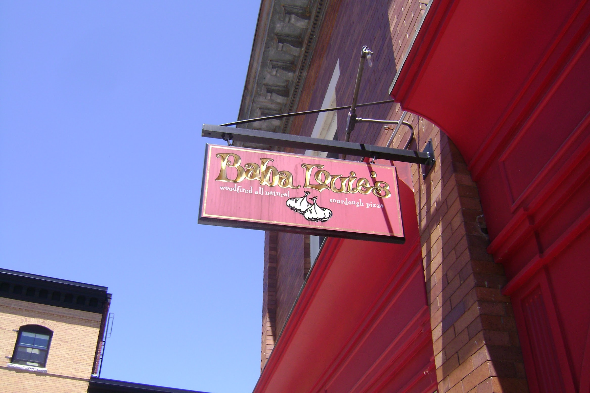
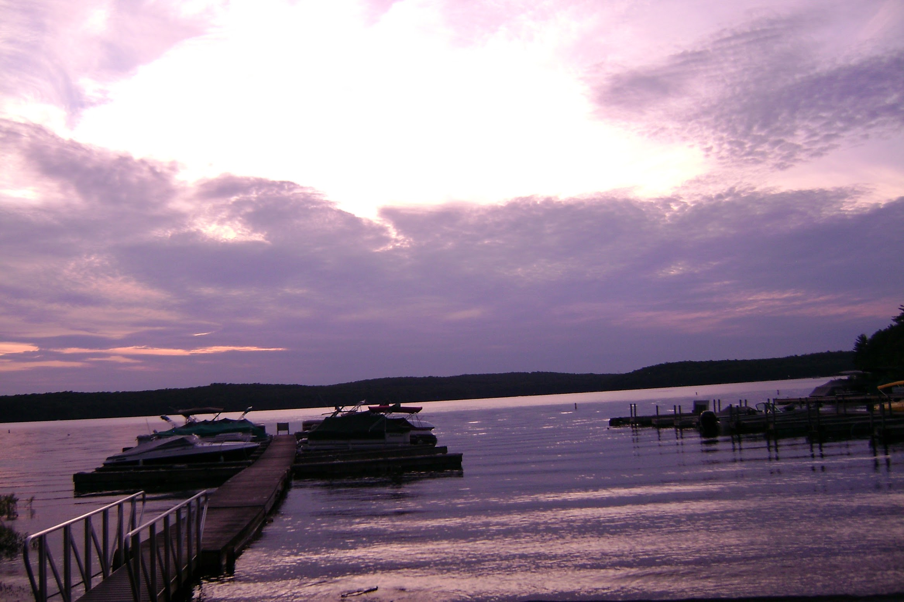
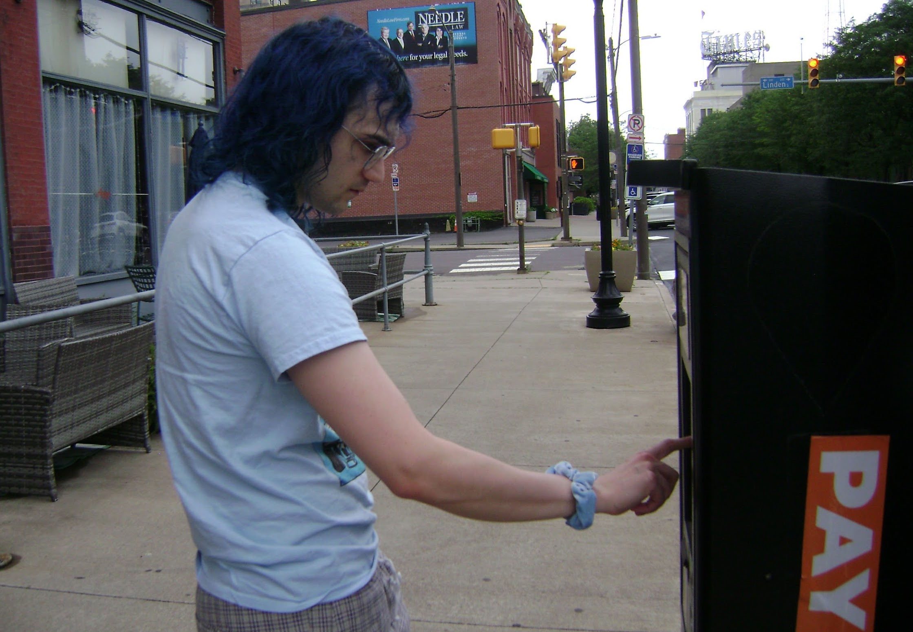
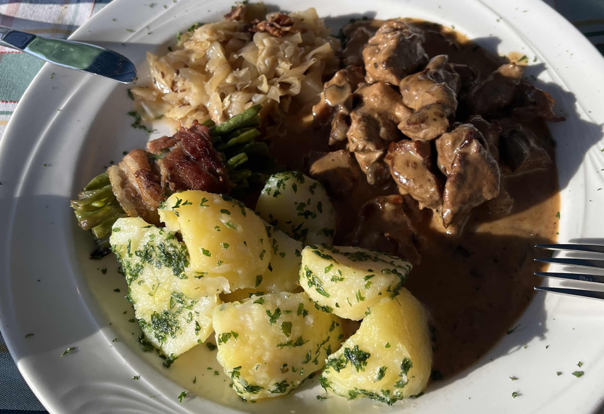

Restaurants
Day 1

The sign for
Baba Louie's
in Great Barrington, MA

Lake near
The Boat House
in Hawley, PA
Day 2

Paying for parking by the
Fork & Bowl
in Scranton, PA

Meal at the
Schmankerlstube
in Hagerstown, PA.
⌂ Home